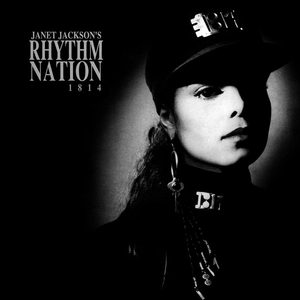

Background
In 1986, American singer and songwriter Janet Jackson’s third studio album Control would help establish her into the mainstream, receiving much critical acclaim. Due to the proven success of the album, it could be expected that Jackson’s next release would be of a similar style in order to help further cement herself as a popular music idol. However, Jackson decided to take a much riskier approach instead by making her following release Rhythm Nation 1814 a concept album that managed to weave serious social issues into its music.
Breaking it Down
A Call to Unite
The album begins with the title track and single “Rhythm Nation”. This song acts as a great introduction to the album by establishing its content musically and thematically. The idea of the ‘Rhythm Nation’ mentioned in this song is a nation made up of all peoples united, looking to make the world a better place. This is a simple and positive notion that nobody can really be offended by or disagree with. For me personally, I find that the biggest success of this song is how Jackson managed to cleverly place its main idea into the chorus:
“People of the world today.
Are we looking for a better way of life.
We are a part of the rhythm nation.
People of the world unite.
Strength in numbers we can get it right.
One time.
We are a part of the rhythm nation.”
While individual verse lyrics are more easily forgotten over time, putting this message directly into the chorus makes it memorable in the long-term. Summing up, this song acts as a nice segway into some of the later album tracks, where Jackson addresses more serious social issues.
Helping Those in Need
In“State of the World”, we see how Jackson more directly tackles heavy subject matter in this album. This song provides two scenarios that many of us have probably witnessed and can sympathize with. One is of a teenage mother living on her own and struggling to earn enough money to feed her child, and the other is of a young boy living out on the streets. These are really upsetting situations to think about, but the song itself doesn’t feel out of place from the album largely due to its upbeat composition and instrumentation. I think this really showcases Jackson’s ability to subtly address social issues in her music without turning away listeners.
Concerns for the Youth
Two of the songs in this album address problems affecting the youth population. The first of these is “The Knowledge”, which discusses the importance of knowledge and proper education in helping to combat prejudice and ignorance. The second, “Livin’ in a World (They Didn’t Make)”, considers how the innocence of children can be lost due to the prejudice and hate older generations display. In contrast to all of the preceding songs in the album, this track is much slower. Musically, it could be compared to a traditional slow song couples might dance to. But instead of providing sappy or sweet lyrics to sway to, Jackson instead leaves us with a troubling but important message to consider.
Closing Thoughts
Overall, Rhythm Nation 1814 proves to be a great example of how troubling social issues can be worked into an otherwise energetic and upbeat album. The way in which Jackson presents these issues after calling for change keeps it from becoming overly negative or critical, helping it appeal to a much wider audience. And yet, its success in portraying these issues is not only seen by looking at how well the album sold, or how its songs did on the charts, but in also considering how relevant the songs’ lyrics and messages still are today.
| Rhythm Nation 1814 | |
|---|---|
|  | |
DescriptionJanet Jackson's fourth debut album Rhythm Nation 1814 was released September 19th 1989. |
| Title Track: "Rhythm Nation" | |
|---|---|
DescriptionThe accompanying video to "Rhythm Nation" presents the album's opening interlude message, advocating that the Rhythm Nation is simply a nation of like-minded people undivided by race. It is otherwise fairly simple in subject matter, but does feature some amazing synchronized choreography. |
References
- Jackson, Janet. “Rhythm Nation”. Rhythm Nation 1814. A&M, 1989. 2.
- Zoladz, Lindsay. “'Rhythm Nation' at 30: How Janet Jackson Pioneered Dance Pop With a Purpose.” The Ringer, The Ringer, 19 Sept. 2019, www.theringer.com/music/2019/9/19/20873833/janet-jackson-rhythm-nation-1814-30th-anniversary-jimmy-jam-terry-lewis.
- “Jackson's Rhythm Nation.” This Day In Music, 21 Apr. 2019, www.thisdayinmusic.com/liner-notes/janet-jackson-rhythm-nation/.